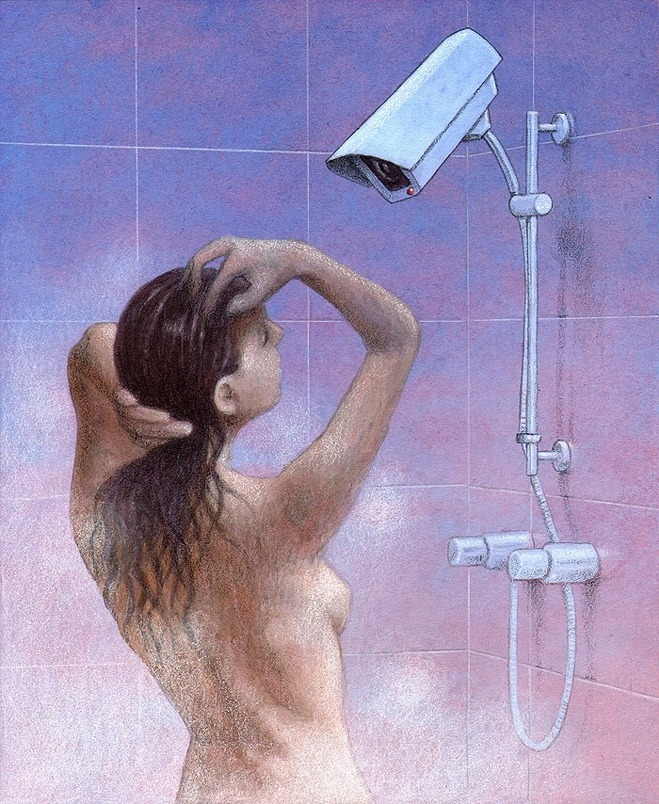

哈哈
@ARose /

NO CHEAT DAY
<爱要有经验，不能纯靠想象所以本文全是想象。>
今晚的晚自习，大黄迟到了几分钟，本来是6点半开始的晚自习，桃总会在一个通向学校的黑黑的小门旁边等大黄出来一起，但是大黄因为多玩了一会手机所以就晚了几分钟到了，桃没有怪他只是等他来一起默默的往前走，桃好像很喜欢走在黑暗中，这样好像就不会暴露他们两个的关系，从现在的角度出发呢，似乎高中生谈个吊恋爱没什么大不了的。但是受限于当时的氛围，这似乎要变成一件值得批判的事情。桃的成绩很好，大黄成天吊二郎担的心思全没花在念书上，桃的家教很严厉，成绩也好乖乖的长得也（瘦高瘦高但是很有气质的那个形容词），卧槽发现我写不了，我没法整出个华丽的形容词来，不管了反正瞎几把写的恩写冲了。年轻稚嫩的脸还不需要化妆品的修饰，白净的皮肤让人一下子都能看到少女细小的汗毛，总之就是个温柔的加分项，一双大眼睛的让人感觉总有眼泪水在里面一样，阳光下还会反光亮亮的像个小镜子一样，（所以人们都喊她桃静，哈哈哈哈哈）。桃的朋友不多，和另外一个女生坐同桌，第二排桃喜欢靠在窗户边上坐着，没事还能看看风景想一些深刻的道理，桃很理性也很有文化，总是干些超出同龄人该干的事情，桃不怎么爱说话，但是只要你一旦熟路起来桃就会特别有意思，遇到趣味相投的人桃总是叨叨个不同，话痨的很，他喜欢和学霸们讨论原子啊哲学啊宇宙的起源，深入了解桃的时候他们都说很难想象这样有一张温柔清澈的女孩总是对这些艰深苦涩的东西感兴趣，桃没有很多朋友，或者说是他不需要那么多朋友，自律的桃已经把生活安排的满满当当、规规律律的了，但是这也不代表桃是个冷漠的人，桃为人正直做事也都大大方方的。
至于大黄成天跟几个狐朋狗友混在一起，书是书不好好念，净喜欢整些让人匪夷所思的事情，一会是什么偷偷出去上网被抓，一会又是从二楼摘银杏叶子摔下楼，几乎每年都要打个石膏啥的，老师为了管住他直接把他安排在讲桌底下坐，大黄似乎觉悟了也开始好好念书了，但是好景不长，有一天在走廊上他抓住了一只鸟，小鸟似乎受伤了，也不飞走，反正就是给他逮到了，然后放在班里养，一下子讲桌底下的作为成为打卡圣地都来看望这只可爱的小鸟。
高中生活太几把压抑了，以致于一件很小的事情都能成为大家的快乐源泉，就这样大黄的玩鸟少年的外号也不禁而走。可是好景不长（实在没有别的词汇了），这种事情还是瞒不住班主任的眼睛被发现厚恼羞成怒，然后给大黄连人带包带鸟直接扔出班级外面，大黄刚准备捡起小鸟就跑的，谁知道大黄前屁股捡起来的鸟后屁股就被班主任直接扔出校园外的荒地了，不能再写了不然会被人误以为大黄是主角，不对不对。
按照惯例这两个人就这么奇幻的在一起了居然在一起了，事后当事人说只要够真实，一定能成功的。大黄很喜欢桃，他能说出一百个桃吸引他的地方（由于词汇有限，这里的100个只代表很多个），桃每次被人问起喜欢大黄什么的时候，大多就是说喜欢大黄的热诚 。这大概就是故事悲剧的开始，一个是喜欢人的固有属性，而一个喜欢的是一种持续的状态。年轻的情侣并没有意识到这一点，繁琐的学习任务之外 ，大黄总能让他感到开心，这就够了。
两人踏过那个黑色的校门，冬天的天黑的很早，6点钟已经接近漆黑一片了，大黄把桃的小手一拉揣进自己的校服口袋里面，桃边走边在吐槽一些学习上的事情，大黄听不见，只是傻呵呵的跟在他的边上，很多事情只要是开头了，就会一直想要做，只见大黄熟练的把桃往不开灯的高一的教室带了过去，高一的学生还没有那么痛苦至少不用上晚自习，带到教室的门后把门一关，对面就是灯火辉煌，希望创造佳绩的高三教学楼，走廊是不是走过几个巡查的老师，大黄深知在明处的人是不会看到处在黑不溜秋中的人的，黑暗的氛围中人总是有些奇怪的心理，大黄面对着桃抱住了她，刚从室外走过来的冲锋衣一样的校服还是凉飕飕的，大黄看着桃的大眼睛，（卧槽想起来了应该是水汪汪才对）拉下自己外套的拉链把桃的手环过来了，校服里面还是很暖和的，就这么抱着，好像只有在这个时候才能逃离那些好多复杂的烦恼，就好像偷来的额外时间，桃把头轻轻的靠在大黄的肩膀上，准确来说是肩膀和脖子的连接处的地方，桃是个彻彻底底的温柔的人，就连呼吸都是很微小的，在几乎完全封闭的空间，人的感官被放大了很多倍，与粗糙的外表不同的是，大黄是个极其敏感的人，桃呼出的微微热的气就像生物上学的神经递质一样，从脖子根出一下子就传导到了全身上的每一个带有感觉的细胞，每一根寒毛都做出了回应。大黄也把头埋进了桃的脖子里面，能感觉的有股暖流从桃的衣服里面涌出来，大黄轻轻的吻了下去，鼻子就蹭着桃白皙的颈部一直向上，大黄也不知道桃是不是跟他有一样的奇妙感觉，就是身体明明发出了侵害的信号，大脑却不这么认为，就这样大黄的嘴唇跟着自己鼻子带的一路向上，跨过下巴那块骨头之后，就能感觉到桃脸上的微微小的绒毛了，总是让大黄赞不绝口的特点，也是属于亲密关系中才能感受到的东西，然后 大黄的鼻子就碰到了桃带有一点点小弧度上翘的鼻子，这样可爱的鼻子安在桃身上再合适不过了，桃的嘴唇上下几乎是一边大小，上唇似乎更加厚一点点，但是无论大黄怎么努力只能用一种奇怪的姿势碰到桃的嘴唇，大黄总结出两个高鼻子的人不适合接吻的荒谬言论，只能是下次再尝试了时间已经不早了27分了，两人默契的整理好衣物，桃先出门跑回教室，大黄坐那回味一会刚才的美妙感觉，顺便岔开时间，大黄总是故意迟到一会，进门的时候看一眼桃，然后安心的回到自己的位置开始睡觉。
傻逼东西，开你妈的车呢，还没等桃反应过来前车就开始骂骂咧咧起来了，桃很着急所以车开的有点快一下子没注意追了尾，气囊都干爆开了，迷迷糊糊中桃居然感受到了一丝惬意，就躺在气囊上也不动的，桃已经很久没有这种感觉了，这让她想起了大黄，第一次的经验大致上都不太圆满，却总是抱有各种幻想 ，生活就像这场车祸一样，他并不会在那彭的一声后结束，却实实在在的添了更多的麻烦。。。。。。。。
。。。。。。。